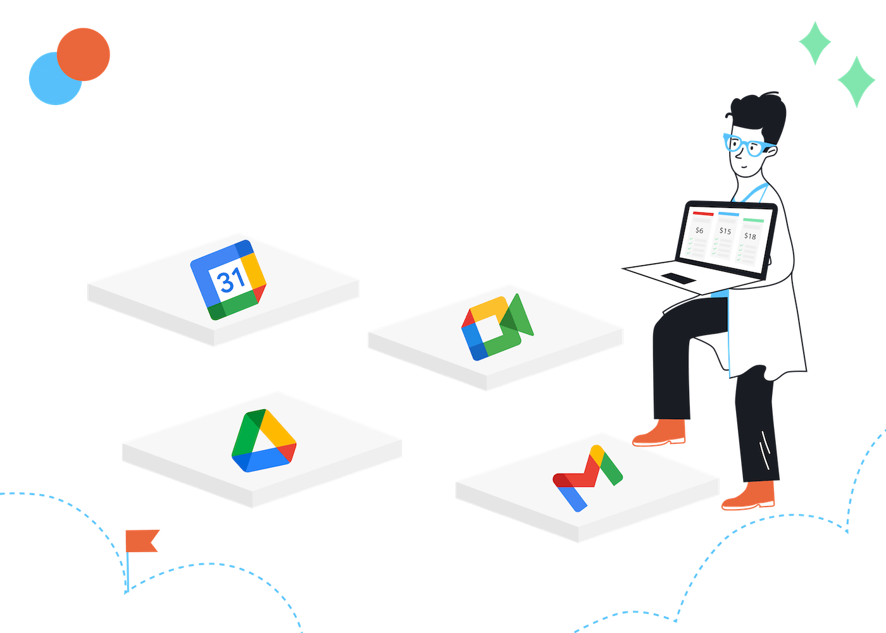

01 / Definition
One home for collaboration.
Google Workspace is a cloud-based productivity suite from Google. It combines communication, creation, storage, scheduling, and administration tools in one connected environment. Because files and services live online, people can work from a browser and collaborate without passing around multiple versions.

Core features
- Real-time editing and comments in Docs, Sheets, and Slides.
- Cloud storage, sharing permissions, and version history through Drive.
- Gmail, Calendar, Meet, and Chat for communication and scheduling.
- Security controls, user management, and analytics for organizations.
02 / Workplace use
From idea to outcome.
Teams use Workspace to reduce friction between planning, communication, and delivery. A project team can meet in Google Meet, capture decisions in Docs, track tasks in Sheets, and keep final files in a shared Drive folder.

03 / A balanced view
Benefits with boundaries.
| Advantages | Limitations and challenges |
|---|---|
| Accessible from many devices and locations. | Strong internet access is important for the best experience. |
| Live collaboration reduces duplicate files. | Shared access needs careful permission management. |
| Integrated tools support a complete workflow. | Users may need training when features change. |
| Automatic saving and version history protect progress. | Cloud services require trust in the provider and account security. |
Good practice for teams
- Use shared drives and clear folder naming conventions.
- Give people the minimum access they need for their role.
- Turn on multi-factor authentication and review sharing links.
- Agree where decisions, deadlines, and final documents belong.